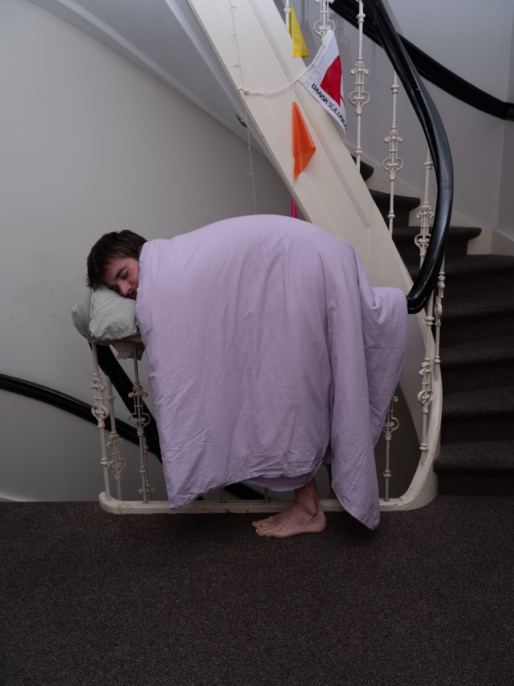

My practice investigates the ingrained knowledge of space, what it consists of and our relationship to how we use it, misuse it, create it and perceive it.
I make sculptures that present themselves as furniture and create a space. I build these physical fictions from orphaned furniture that i hunt for and gather on the city streets. I build intuitively by looking for what the material wants to become through playing with it.
What walks a thin line between sculpture and furniture is a research tool. It can and it should be used and experienced in its entirety. In this way the deeply ingrained ways of assumption about furniture and spaces are compromised, and a path presents itself towards unlearning habits, norms and how we exist in space.